Normal Wright workspace and actual isolated engineering run. No mocked routes or physical action.
Status: pass
Entered the normal authenticated workspace.
Expected: The workspace loads and offers Workflows.
Actual: Normal workspace and Workflows control visible.
raw 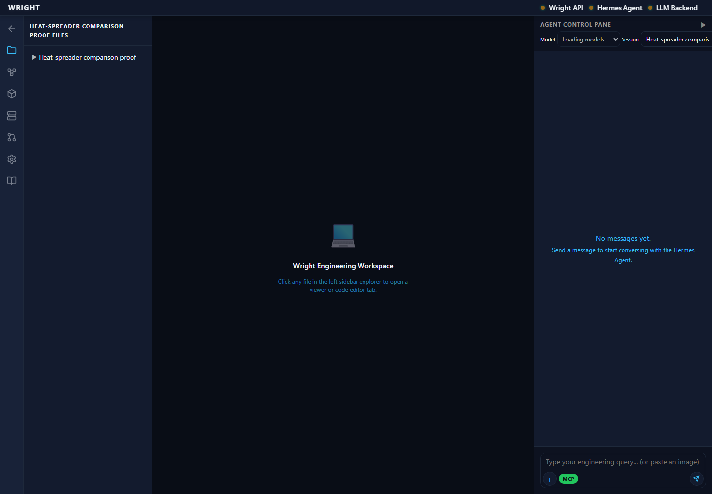
annotated 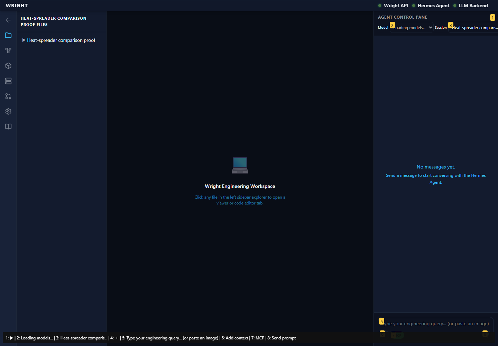
The established workflow editor is available inside the workspace.
Expected: Editor and working-view action appear.
Actual: Editor and working-view action visible.
raw 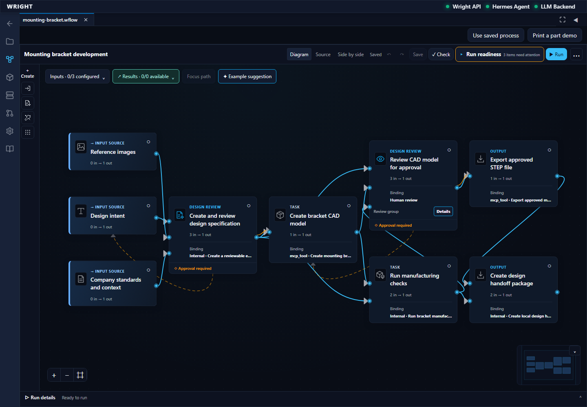
annotated 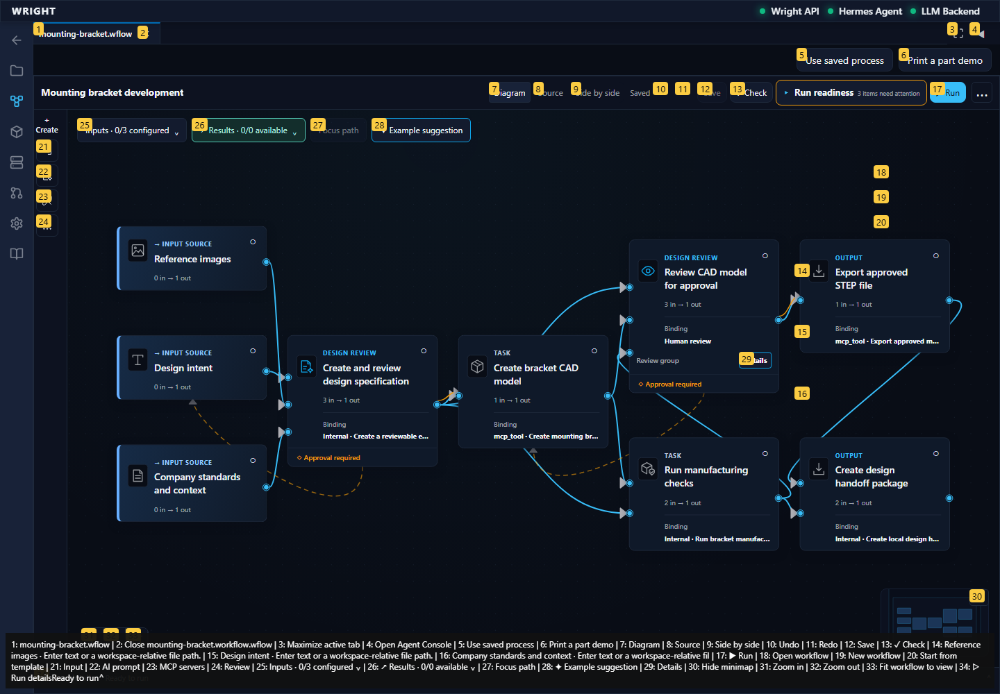
The workspace offers named saved workflows.
Expected: Open workflow is offered.
Actual: Existing file actions are visible.
raw 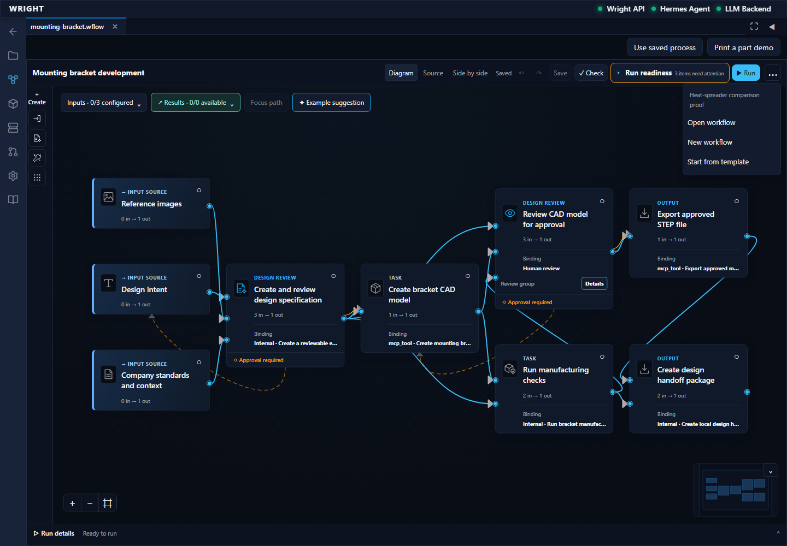
annotated 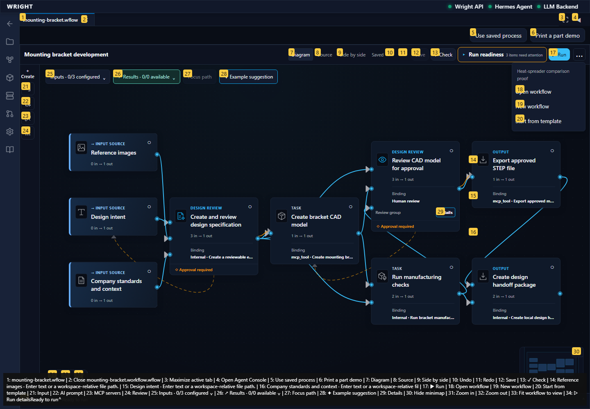
The exact accepted heat workflow appears in the saved files.
Expected: The accepted heat workflow is listed.
Actual: Exact accepted workflow choice visible.
raw 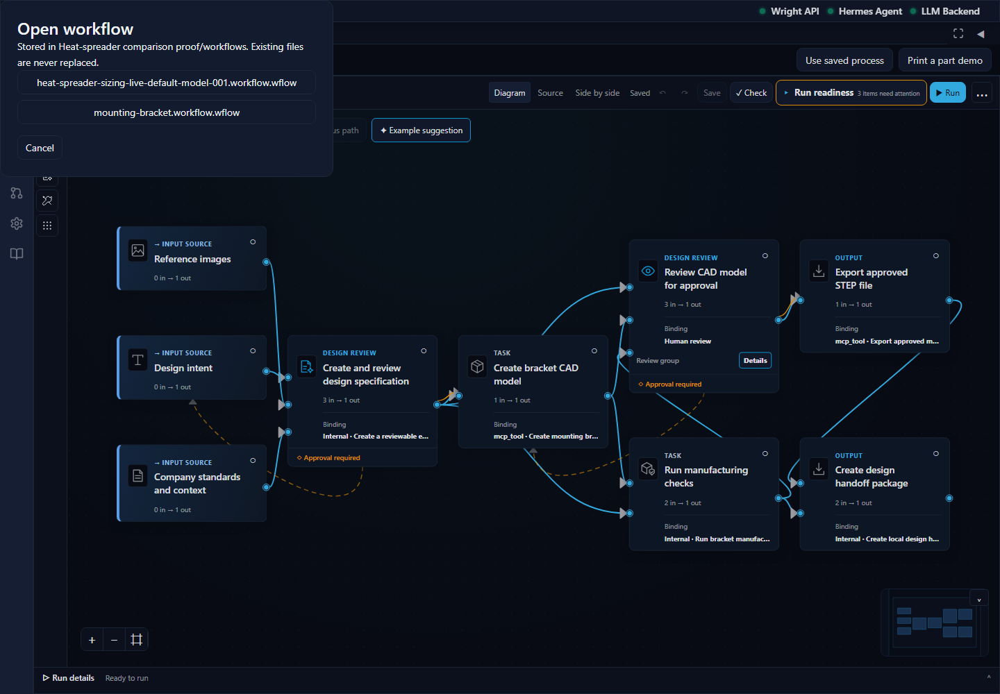
annotated 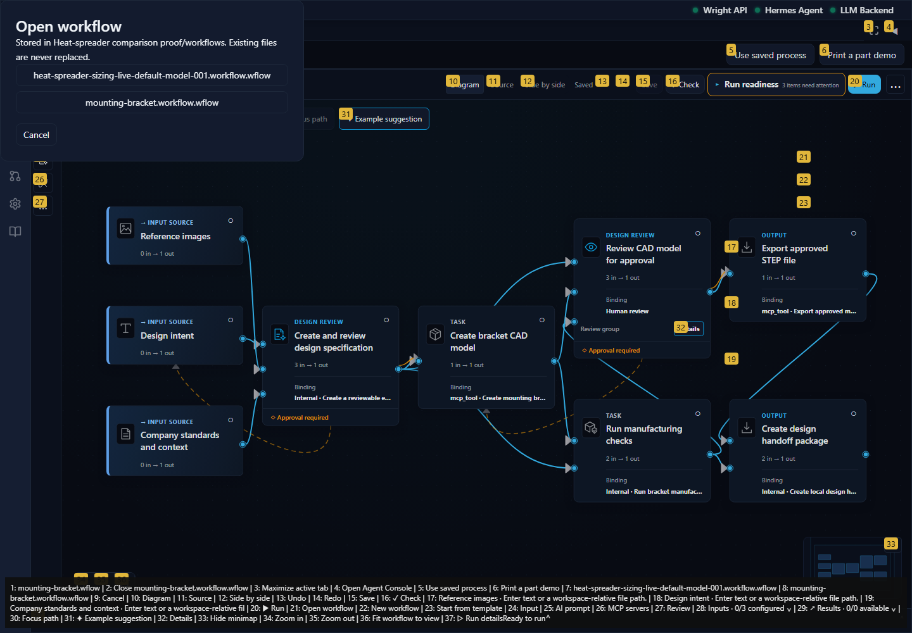
The original heat assignment opens with its connected review, CAD and analysis stages.
Expected: Accepted heat diagram and working view action available.
Actual: Exact saved heat source is open.
raw 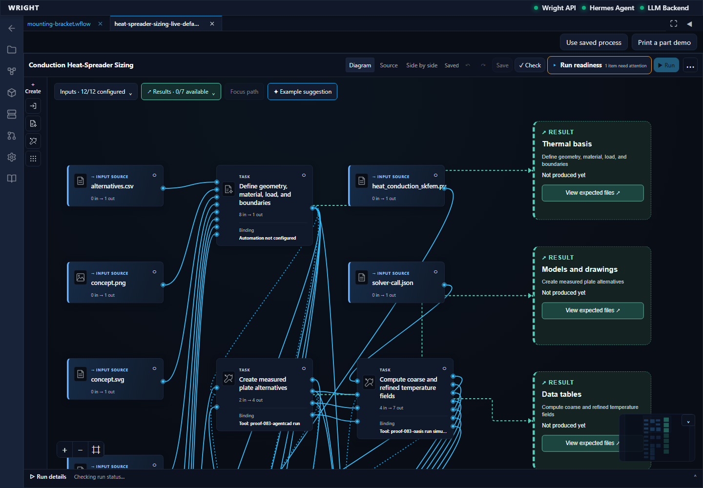
annotated 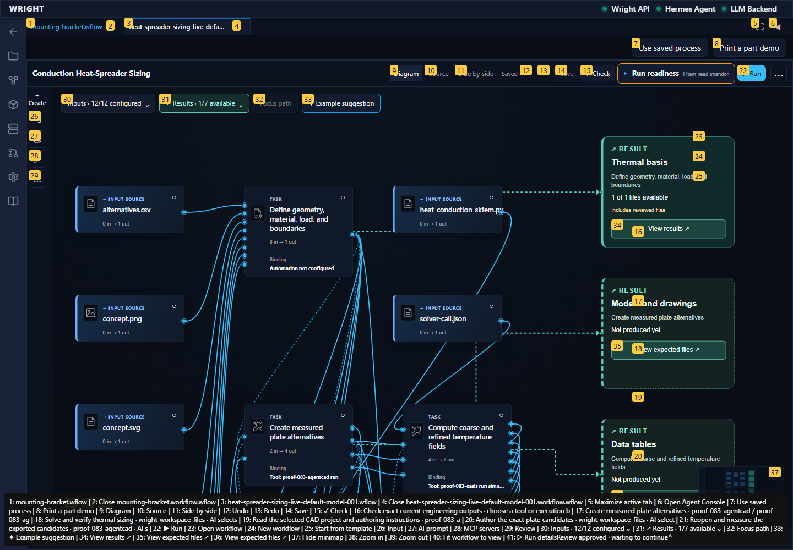
The process working interface opens in another Wright workspace tab.
Expected: Common working view in a workspace tab.
Actual: Common working view visible.
annotated 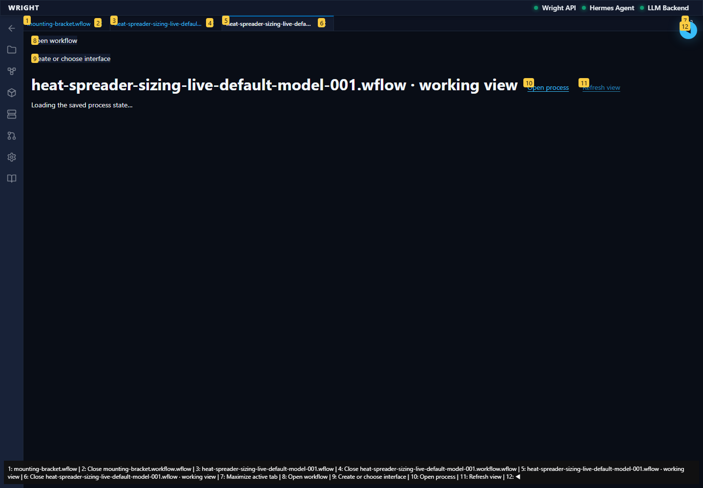
Reopening the recorded run shows its actual declared basis review.
Expected: Declared review waiting state, no automatic continuation.
Actual: Actual run waiting for review is visible.
annotated 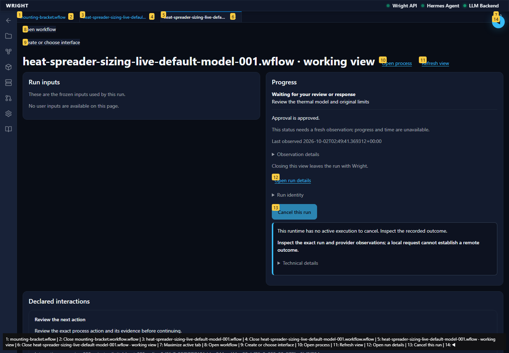
The test decision is labelled; continuation retains an explicit confirmation.
Expected: A synthetic review label and explicit confirmation.
Actual: Test review and confirmation visible.
The authorized test decision is shown separately from human acceptance.
Expected: Test review label and enabled continuation for this exact run.
Actual: Synthetic decision visible; Continue process enabled.
annotated 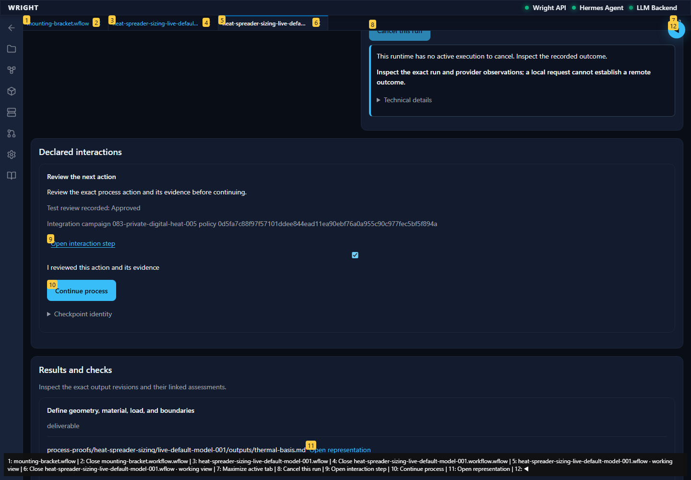
Wright continues CAD and analysis after the declared review.
Expected: The same recorded run becomes Running.
Actual: Continuation accepted; same-run running progress visible.
annotated 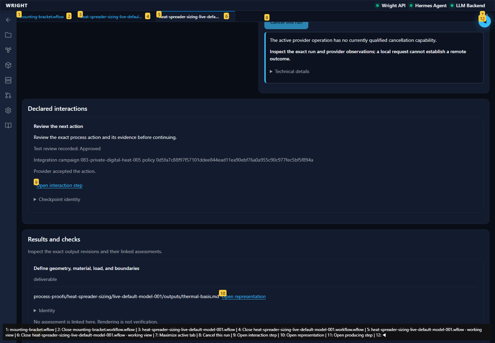